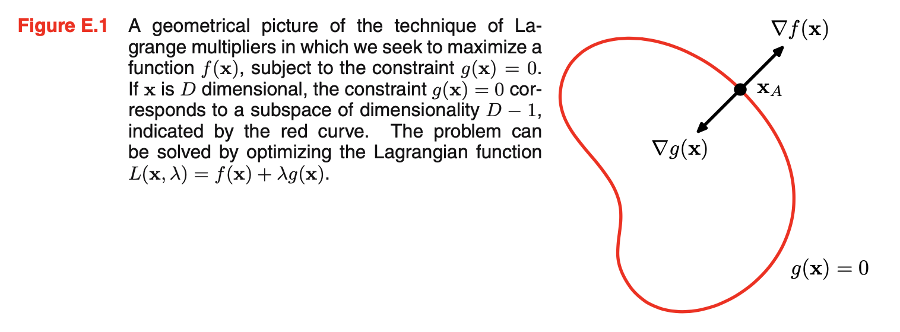
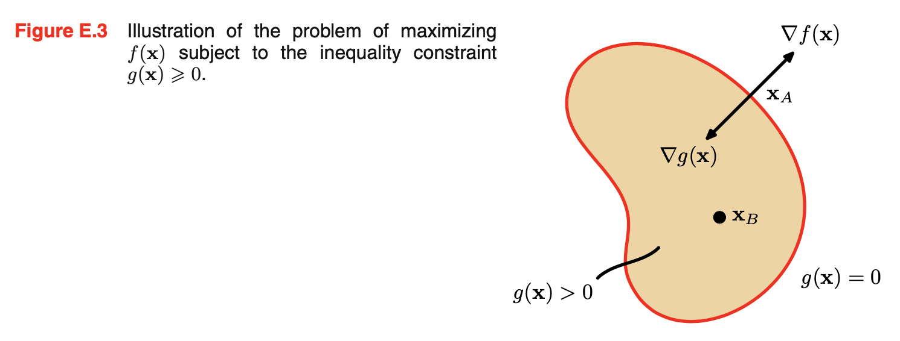

[PRML]Appendix E.Lagrange Multipliers
PRML 在 Appendix E 中用直观的几何视角介绍了用拉格朗日乘数法求解带约束条件的极值问题。
等式约束
考虑在约束条件 \(g(x_1,x_2)=0\) 下最大化函数 \(f(x_1,x_2)\)，最直接的方法是从 \(g(x_1,x_2)=0\) 中解出 \(x_2=h(x_1)\)，然后带回优化目标得到 \(f(x_1,h(x_1))\)，于是问题转化为无条件的优化问题。然而，我们一般很难把 \(x_2\) 显式地写作 \(x_1\) 的解析形式；另外，这个方法也会破坏 \(x_1\) 和 \(x_2\) 的天然对称性。
一个更优雅和简单的方法是拉格朗日乘数法。我们可以从几何视角看拉格朗日乘数法的动机。考虑一个 \(D\) 维变量 \(\mathbf x=(x_1,\ldots,x_D)^\mathrm T\)，则约束条件 \(g(\mathbf x)=0\) 表示 \(\mathbf x\) 所在空间中的一个 \(D-1\) 维曲面，如下图所示：

首先，我们注意到约束曲面上任一点关于 \(g\) 的梯度 \(\nabla g(\mathbf x)\) 与约束曲面是正交的。为了说明这一点，考虑约束曲面上的一点 \(\mathbf x\) 和也在约束曲面上的邻近的一点 \(\mathbf x+\epsilon\). 在 \(\mathbf x\) 处做泰勒展开： \[ g(\mathbf x+\epsilon)\simeq g(\mathbf x)+\epsilon^\mathrm T\nabla g(\mathbf x) \] 由于 \(\mathbf x,\mathbf x+\epsilon\) 都在约束曲面上，所以 \(g(\mathbf x+\epsilon)=g(\mathbf x)=0\)，于是 \(\epsilon^\mathrm T\nabla g(\mathbf x)\simeq 0\). 当 \(\Vert\epsilon\Vert\to0\) 时，有 \(\epsilon^\mathrm T\nabla g(\mathbf x)\to 0\). 由于 \(\epsilon\) 是平行于约束曲面的，所以 \(\nabla g(\mathbf x)\) 就是约束曲面的法向量方向，即与之正交。
现在我们想找到一个 \(\mathbf x^\ast\) 使得 \(f(\mathbf x)\) 达到最大。这样的点一定满足 \(\nabla f(\mathbf x)\) 也与约束曲面正交，否则我们可以将其继续在约束曲面上往梯度方向移动。因此，\(\nabla f(\mathbf x)\) 与 \(\nabla g(\mathbf x)\) 平行，即存在一个 \(\lambda\)，使得： \[ \nabla f(\mathbf x)+\lambda\nabla g(\mathbf x)=0\tag{1}\label{1} \] \(\lambda\neq0\) 即拉格朗日乘子，注意可以取正或取负。
如果定义拉格朗日函数为： \[ L(\mathbf x,\lambda)\equiv f(\mathbf x)+\lambda g(\mathbf x)\tag{2}\label{2} \] 那么只要令 \(\nabla_\mathbf xL=0\)，就得到了 \(\eqref{1}\) 式。进一步地，令 \(\partial L/\partial \lambda=0\) 就得到了约束条件 \(g(\mathbf x)=0\). 这相当于在求解拉格朗日函数 \(L(\mathbf x,\lambda)\) 的驻点。所以我们就把带约束条件的极值问题转化为了无约束条件的极值问题。
不等约束与 KKT 条件
上一节我们考虑的是等式约束 \(g(\mathbf x)=0\)，现在我们考虑不等约束 \(g(\mathbf x)\geq 0\) 下的优化问题。
在不等约束下，解有两种可能：
落在约束区域以内，即 \(g(\mathbf x)>0\).
此时，约束条件并没有发挥什么作用，\(\mathbf x\) 是驻点的条件就是 \(\nabla f(\mathbf x)=0\)，相当于在拉格朗日函数中取 \(\lambda=0\).
落在约束区域的边界上，即 \(g(\mathbf x)=0\).
此时回到了等式约束下的优化问题，通过解拉格朗日函数的驻点求解。但是为了让 \(f(\mathbf x)\) 最大，\(\nabla f(\mathbf x)\) 必然是朝向区域 \(g(\mathbf x)>0\) 的外面（如下图所示），否则我们能在 \(g(\mathbf x)>0\) 区域内找到更大的 \(f(\mathbf x)\). 由于 \(\nabla f(\mathbf x)=-\lambda g(\mathbf x)\)，所以此时 \(\lambda>0\).

两种情况可以通过 \(\lambda g(\mathbf x)=0\) 统一起来。因此，在 \(g(\mathbf x)\geq0\) 的条件下最大化 \(f(\mathbf x)\) 的解法是，在以下条件下优化拉格朗日函数 \(\eqref{2}\) 式： \[ \begin{align} g(\mathbf x)&\geq 0\\ \lambda&\geq0\\ \lambda g(\mathbf x)&=0 \end{align} \] 这些条件被称作 KKT（Karush-Kuhn-Tucker）条件。
注意上面是最大化 \(f(\mathbf x)\)，如果是最小化 \(f(\mathbf x)\)，那么 \(\nabla f(\mathbf x)\) 的方向与 \(\nabla g(\mathbf x)\) 应该是相同的。若保持 \(\lambda\geq0\) 不变，那么应该把拉格朗日函数改写作：\(L(\mathbf x,\lambda)=f(\mathbf x)-\lambda g(\mathbf x)\).
若有多个约束条件，对每个条件都引入一个拉格朗日乘子即可。例如，我们希望求解： \[ \begin{align} \max\quad&f(\mathbf x)\\ \text{s.t.}\quad&\begin{cases} g_j(\mathbf x)=0,&j=1,\ldots,J\\ h_k(\mathbf x)\geq0,&k=1,\ldots,K\\ \end{cases} \end{align} \] 那么定义拉格朗日函数为： \[ \begin{align} &L(\mathbf x,\{\lambda_j\},\{\mu_k\})=f(\mathbf x)+\sum_{j=1}^J\lambda_j g_j(\mathbf x)+\sum_{k=1}^K\mu_k h_k(\mathbf x)\\ \text{s.t.}\quad&\begin{cases} \mu_k\geq 0,&k=1,\ldots,K\\ \mu_kh_k(\mathbf x)=0,&k=1,\ldots,K \end{cases} \end{align} \] 联立 \(\nabla_\mathbf xL=0\)、两个约束条件和上述 KKT 条件，解该不等式方程组即可。
类似的方法也可以扩展到约束条件下的泛函优化问题。